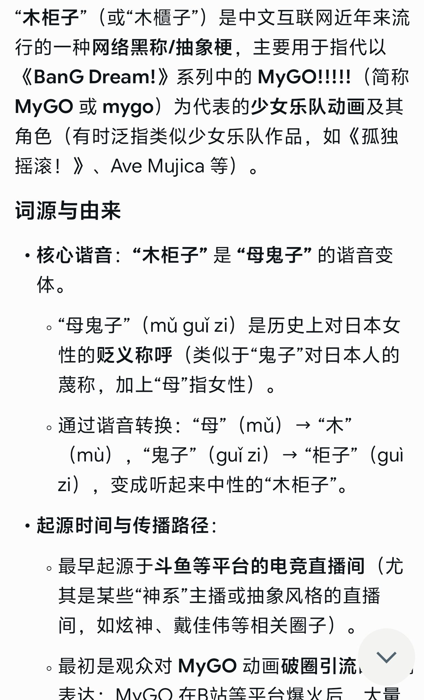
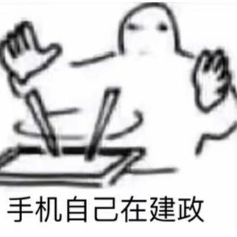

依菲雅✨𝑬𝒑𝒉𝒆𝒊𝒂🏳️⚧️
@nyaepheia
@m781145 @CyberKanjousen 但是木柜子确实是对MyGO 系列的蔑称（刚刚表述为Mujica 是我表述的不准确）
FYI：

七海千秋
@wzsgsb93589
@m781145 @nyaepheia @CyberKanjousen https://t.co/yxwdi7AZqh

片警别搞我：（
@m781145
@nyaepheia @CyberKanjousen 不是，我什么时候说Mujica是辱华动漫了你扣什么帽子？我不都说了吗看个日漫就骂别人是鬼子很傻逼你阅读理解没做过吗？
女柜子这个词最早是有人出英雄学院的COS才有的其他的说法我确实没听说过那要不你说说这个词最早怎么来的呢？像什么有人说进击巨人东京喰种啥的，说是辱华动漫确实是恶意解读唐完了 https://t.co/cCcX5D1E5Y